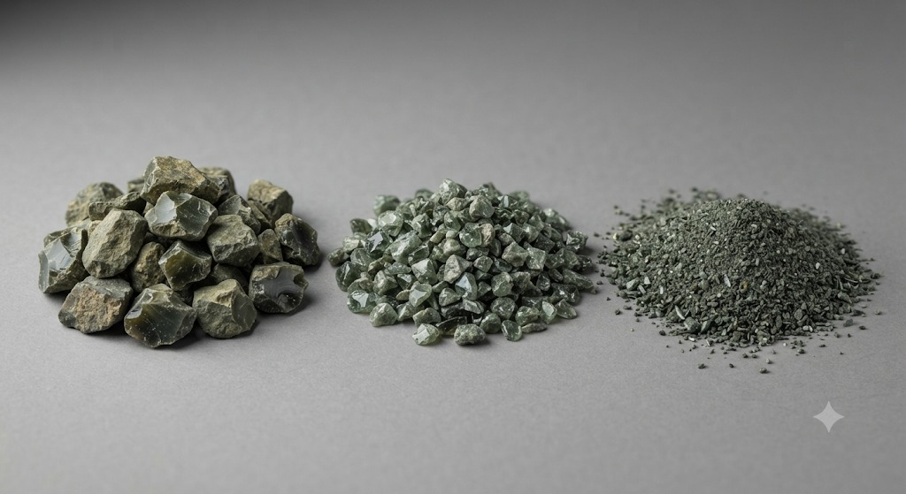
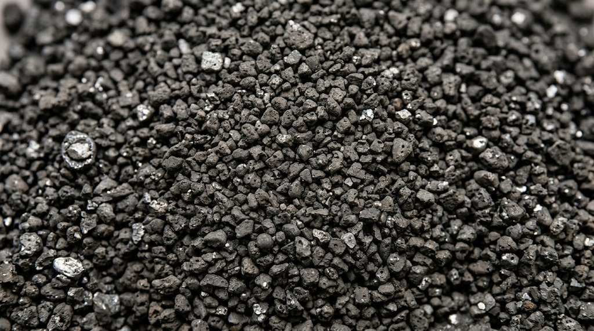

The fine fraction, slag sand, often carries a noticeable share of metal but requires dedicated recovery methods. When silicomanganese slag is crushed, the fine classes may contain a significant quantity of finished alloy prills. Using such material in road construction without prior cleaning means the resource is lost for good.
For copper smelter slags, work with the fine fraction involves fine grinding followed by flotation. For blast furnace sludges, grinding raises the iron content of the concentrate, but whether this is economically justified depends on the cost of grinding.
Magnetic separation of fine prills is frequently a technological dead end. Whether such classes are worth processing is confirmed only in the laboratory.


R. Keren works with all secondary metallurgical materials. The processing route is determined by the properties of the specific material and confirmed in the laboratory during project work — a working step, not a restriction on the range of materials.
Every project starts with data, not assumptions.
Related
Why metal stays in the slag · Total content vs metallic phase · Magnetic separation · Wet sludge · Representative sampling · Limits of a plant laboratory · Assessing a dump: the tests
Equipment and areas of responsibility · All industry questions